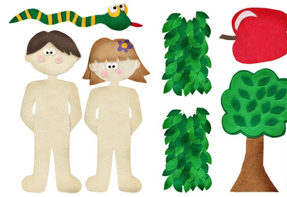

Friday, January the 10th, 2014
back to: title, date or indexes
The monopod flautist Ian Anderson once sang about the time “when the Eve-bitten apple returned to destroy the tree”. I have no idea what he was going on about, and I suspect Mr Anderson may just have wanted something to rhyme with the “sea” and “to be” endings of the preceding lines in his song.
In any case, it is the time before the apple returned to the Garden of Eden that concerns me today, over in my cupboard at The Dabbler, the editor of which found this splendidly apt picture with which to illustrate the piece.
